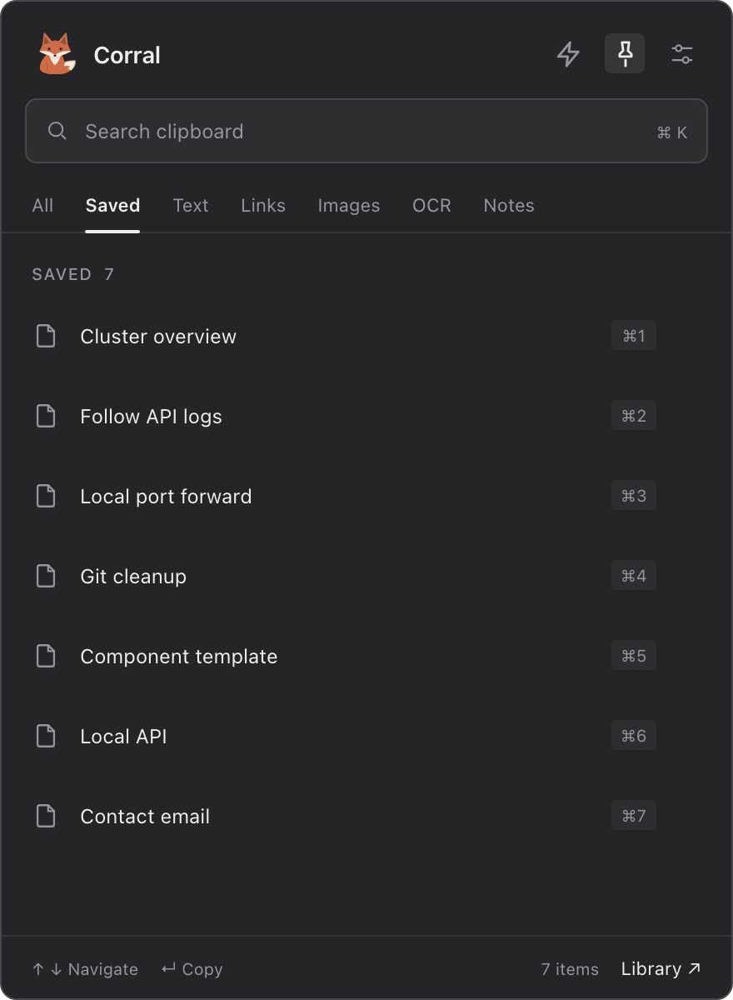
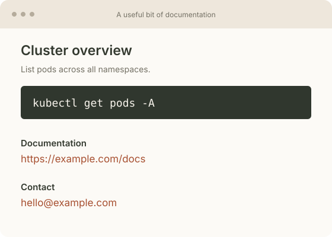
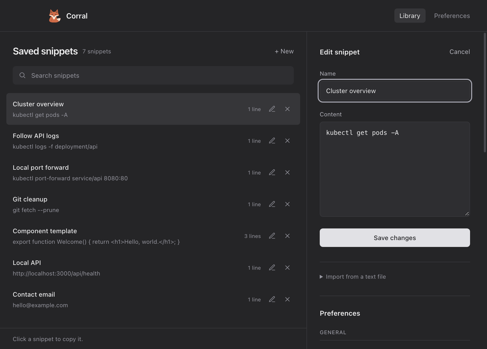
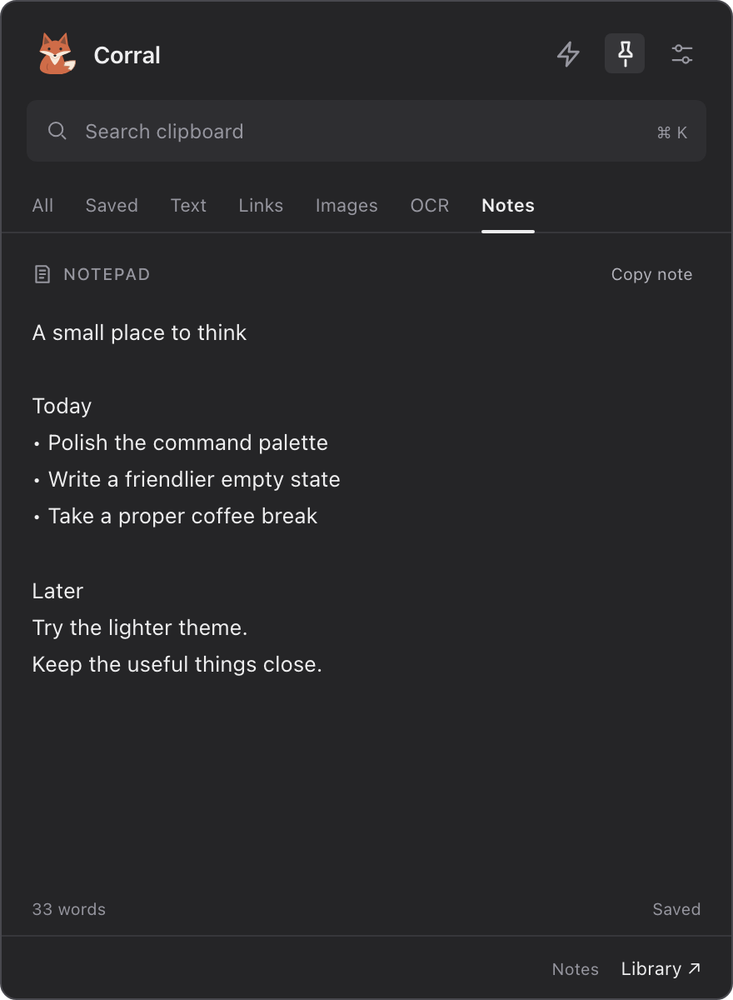
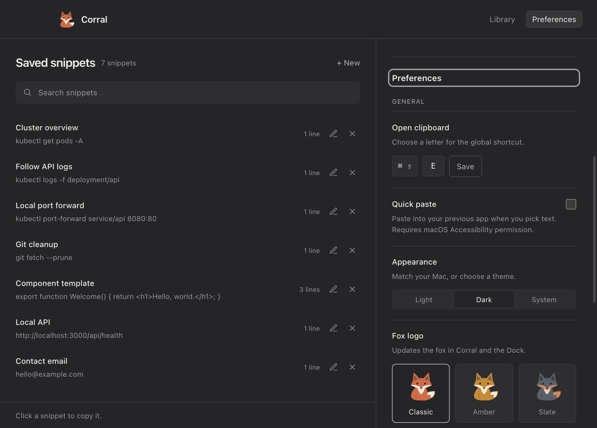

macOS clipboard companion
Keep the image.
Copy the words.
Screenshots, design references, that useful bit of documentation. Keep copied images close, and turn the text inside them into something you can paste. All on your Mac.
Press ⌘ ⇧ E. Corral opens beside your mouse pointer, from whichever app you’re in.
Apple Silicon · unsigned app
Set E in Preferences. Fresh installs start with ⌘⇧R.
v1.3.5115 MBDMG download

01 / Images with more to give
Keep the reference.
Use what’s inside.
A screenshot from a teammate. A UI you want to revisit. A link trapped in an image. Find copied images in Corral, copy them again, or open them in OCR to extract their text.

Text you can use
Cluster overview
kubectl get pods -A
Documentation
https://example.com/docs
Contact
hello@example.comDetected values
- https://example.com/docs
- hello@example.com
In Corral, copy all the recognized text or just a detected value.
- Your visual references, close by
- Browse copied screenshots and images in the Images tab. Select one to put it back on your clipboard.
- Text extraction on your Mac
- Apple Vision recognizes text when you open an image in OCR. Your image isn’t sent to an OCR service.
- The useful details, ready to copy
- Copy detected links, emails, phone numbers, dates, amounts, and numeric codes. Search recognized text after extraction.
02 / A shortcut that comes to you
Your mouse points.
Corral follows.
Editing code, browsing documentation, or checking a design? Press ⌘ ⇧ E to open Corral beside your mouse pointer in your current app. Your clipboard comes to where you’re working.
Corral lives quietly in your menu bar, with no Dock icon. Click the fox to open your clipboard under the tray icon, or right-click for Library, Preferences, and Quit.
Choose E in Preferences to use ⌘ ⇧ E, or pick your own letter. The default is ⌘ ⇧ R.
03 / A few things worth keeping
Give the useful
bits a name.
That kubectl command you always look up. A local port forward. A reply you’ve written a hundred times. Save it once, and find it by a name that makes sense to you.

Read and search saved contents here. In the menu-bar popup, only your saved names are shown.
- Cluster overview
kubectl get pods -A- Follow API logs
kubectl logs -f deployment/api- Local port forward
kubectl port-forward service/api 8080:80
04 / Somewhere for a passing thought
A blank page.
A little breathing room.
A thought, a checklist, a bit of text you’re still working on. Notes gives it an open writing space and saves as you type.
Plain text. A word count. One click to copy your note.
Leave it here. Come back when you’re ready.
05 / The small, helpful details
For the everyday.
And the slightly nerdy.
- Commands, links & little bits of code
- Search your history, use the filters, or reach the first nine items with ⌘ 1 through ⌘ 9.
- Named snippets & local backups
- Keep frequently pasted text in the Library. Import a text file, or export a JSON backup to keep a copy of your data.
- Your Mac, your preferences
- Choose light, dark or system appearance. Set your shortcut, pick a fox, and keep a local backup.

06 / Welcome in
Make yourself at home.
Open the disk image.
Open the DMG and drag Corral.app into the Applications folder.
If your work Mac asks for approval, use your organization’s privilege-management tool.
Set your shortcut.
Open Corral and look for the fox in your menu bar. Choose E in Preferences for ⌘ ⇧ E. Fresh installs use ⌘ ⇧ R.
Where does Corral live?
Corral runs in the background and lives in the macOS menu bar. Click its fox to open the tray popup. The global shortcut opens it beside your pointer; the Library is a separate window for snippets and Preferences.
How do I extract text from an image?
Copy an image or screenshot, open Corral, and select the OCR tab. Open the image to run text recognition on your Mac. Use Copy all for the full text, or click a detected value to copy just a link, email, or other detail.
Will it work on my Mac?
The download offered here is for Apple Silicon Macs. Check “About This Mac” for an Apple M-series chip.
Why might macOS show a warning?
The current build isn’t signed with an Apple Developer ID or notarized by Apple. If macOS blocks the first launch, review the warning in System Settings → Privacy & Security and use Open Anyway for the copy you downloaded from the official release page. See Apple’s opening-apps guide for the steps.
Where does my clipboard go?
Clipboard history, saved snippets and Notes stay on your Mac. Image text extraction uses Apple Vision. Corral also checks its public GitHub release feed for app updates.
Can it paste straight into my app?
Turn on Quick Paste in Preferences to paste selected text into your previous app. macOS Accessibility permission is required. You can also keep the usual copy-and-paste flow.
Can I keep a backup?
Yes. Export a local JSON backup from Preferences, and import it when you need it.
A little less searching. A little more doing.
Your next copy
already has a home.
Download Corral DMG
Apple Silicon · unsigned app